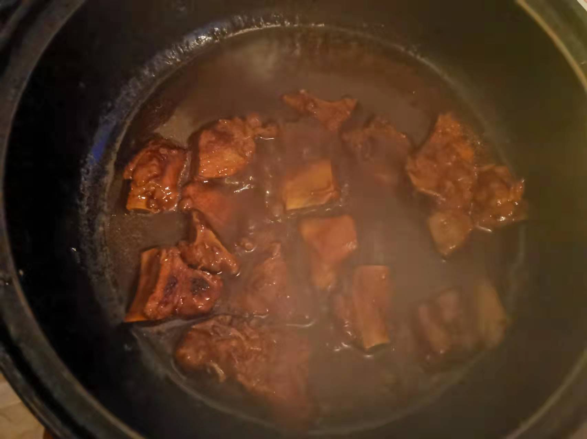
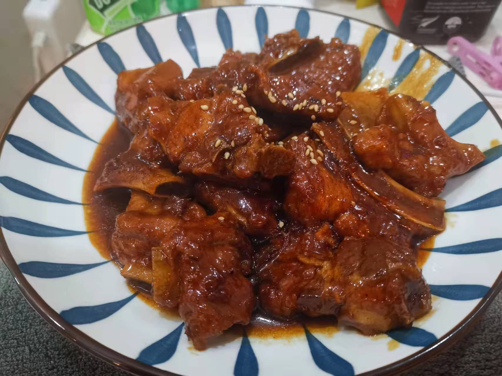

糖醋排骨的做法
糖醋排骨是一道具有代表性的传统名菜，以其独特的酸甜口味深受大众喜爱。本菜谱在保留原有风味的基础上，对用料绑定、火候控制以及操作细节作了优化，旨在提高菜谱的可迁移性和可执行性。
 
预估烹饪难度：★★★★
必备原料和工具
- 排骨
- 白砂糖
- 食用油
- 生抽
- 蚝油
- 老抽
- 鸡精
- 姜片
- 芝麻
- 番茄酱
- 香醋
- 五香粉
计算
每份：
- 排骨 300 g
- 白砂糖 30 g
- 食用油 300–350 ml （油量需根据锅具大小调整，如用于深炸则以足以覆盖排骨 2/3 为准）
- 生抽 5 ml
- 蚝油 5 ml
- 老抽 5 ml
- 鸡精 2 g
- 姜片 2 片
- 芝麻 2 g
- 番茄酱 10 g
- 香醋 5 ml
- 五香粉 2 g
操作
- 排骨与姜片放入冷水中，大火加热至水沸腾、出现大量泡沫后转中火，待水持续沸腾时再转小火焯水 2–3 分钟，捞出备用。
- 用开水反复清洗排骨 2–3 遍，确保彻底去除血沫。
- 在锅中倒入足够量的食用油进行深炸（油量依据锅具大小而定，建议约 300 ml 供一般家庭使用），待油温升至约 170°C 后，下排骨炸制 3–5 分钟，直至表面略呈金黄色，捞出控油。
- 另取干净锅，置于小火上加热 50 ml 热水，加入白砂糖 30 g，轻轻搅拌直至糖完全溶解，并略呈淡黄色。此步骤的重点在于观察糖溶解情况，无需过分依赖颜色变化。
- 将炸好的排骨倒入炒制糖水的锅中，迅速翻炒 30 秒后，依次加入香醋 5 ml、生抽 5 ml、蚝油 5 ml、鸡精 2 g、番茄酱 10 g、五香粉 2 g，再次翻炒 30 秒，使调料均匀裹覆排骨，然后加入开水至刚好没过排骨。
- 用大火将锅中液体煮沸后，加入老抽 5 ml 进行上色，并快速收汁；若排骨块较大，可转小火焖煮 5–10 分钟以便更好地入味，切勿采用中火长时间炖煮 20 分钟，以免损伤口感。
- 起锅装盘，撒上芝麻 2 g，即可享用。
附加内容
- 炸排骨时可根据实际情况轻撒少量干淀粉于排骨表面，以提升酥脆口感。
- 焯水时注意火力变化：冷水下锅后先用大火至水沸腾、泡沫丰富，再转中火，最后转小火焯水；焯水后应使用开水清洗，避免因温差过大导致肉质变柴。
- 步骤四的关键在于确保白糖完全溶解，无须过分依赖颜色变化判断。
- 收汁时应快速翻炒，使排骨均匀裹上调料，避免长时间煮炖造成口感损失。
如果您遵循本指南的制作流程而发现有问题或可以改进的流程，请提出 Issue 或 Pull request 。